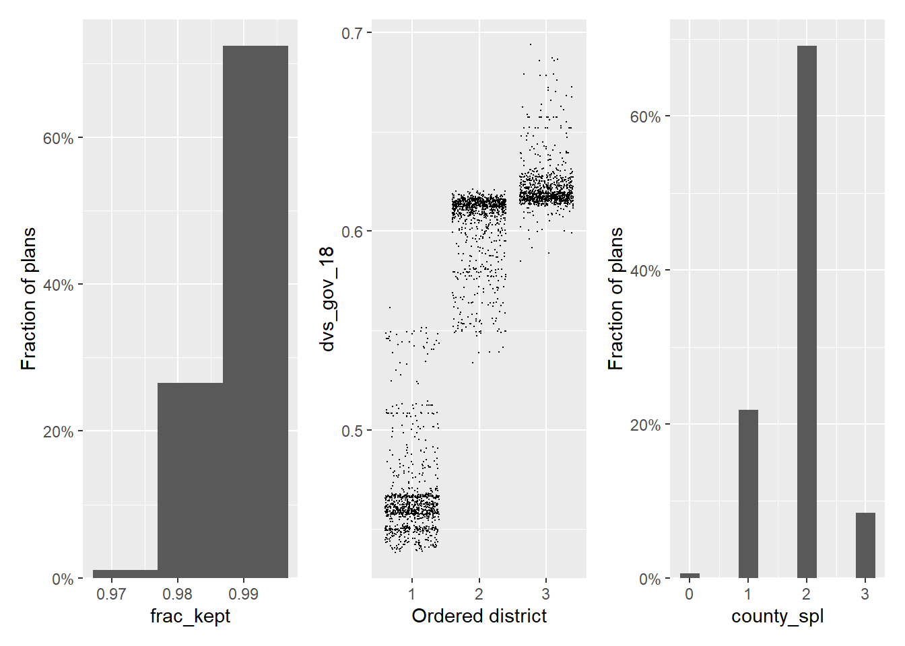

library(tidyverse)
library(redist)redist 4.0
A major release with big changes to constraints and diagnostics.
We are excited to announce the arrival of redist 4.0.1 on CRAN. This update focuses on increasing constraint consistency and diagnostic usability. The new tools here have been thoroughly tested as part of the 50-State Redistricting Simulations project.
To install the new version, run install.packages('redist').
New Features
- A new constraint interface that is more flexible, user friendly, and consistent across algorithms (see
redist_constr()and?constraints). For the first time, user-defined custom constraints are supported and integrated within all three algorithms. - New diagnostic-checking function,
summary.redist_plans() - Summary statistics have been broken out into a new
redistmetricspackage This will speed up compilation time and also provides a cleaner, more extensible interface for the implementation of additional metrics. - Parallel computing support for the SMC algorithm, both within and across sampling runs
- Reproducible across-run parallelism throughout the package, via
doRNG - Much faster
match_numbers()using the Hungarian method min_move_parity()calculates how much population needs to be moved between districts in order to completely balance a redistricting plan.- Support for partial SMC simulations, where fewer districts are drawn than the total number. Allows advanced users to manually combine partial runs to form complete maps.
- Improved algorithm reporting, including new progress bars and
clierrors and warnings throughout the package - Update the SMC algorithm to include a missing correction factor for the number of ways to sequentially label districts. This factor should not have an effect on substantive conclusions and summary statistics.
- Remove deprecated functions
- Many bug fixes (see https://github.com/alarm-redist/redist/issues)
Updated Features: A Brief Demo
The first thing you’ll notice upon loading redist is that it also loads redistmetrics. redistmetrics used to live within redist but has been separated to keep the package size reasonable and to make the individual compile times shorter.
We can pull in some data from the ALARM Project, which combines 2020 Census data with VEST’s election data, retabulated to 2020 voting districts. For this example, we can use data from New Mexico.
nm <- geomander::get_alarm('NM')We can then make a redist_map for New Mexico.1
map_nm <- redist_map(nm, ndists = 3, pop_tol = 0.005)And we can begin with a basic run of redist_smc to sample 1000 plans using the sampler from Sequential Monte Carlo for Sampling Balanced and Compact Redistricting Plans by Cory McCartan and Kosuke Imai. Most importantly, redist_smc now offers an argument for the number of independent sampling runs. For now, we can break that 1000 plans into 2 runs of 500.
set.seed(2022)
plans <- redist_smc(map = map_nm, nsims = 500, runs = 2, counties = county)The new messages above are created with cli to more make message printing cleaner and more consistent.
To the output, we can add some basic summary information using available redistmetrics functions, automatically loaded by redist.
plans <- plans %>%
mutate(
frac_kept = comp_frac_kept(plans = ., shp = map_nm),
dvs_gov_18 = part_dvs(plans = ., shp = map_nm, dvote = gov_18_dem_luj, rvote = gov_18_rep_pea),
county_spl = splits_admin(plans = ., shp = map_nm, admin = county)
)In order, this adds the Fraction Kept compactness score, the Democratic two-party vote share in the 2018 Governor’s race, and the number of counties split.
Now, the plans object has a few new columns:
head(plans)A <redist_plans> containing 1,000 sampled plansPlans have 3 districts from a 1,977-unit map, and were drawn using Sequential
Monte Carlo.With plans resampled from weights
Plans matrix: int [1:1977, 1:1000] 3 3 3 3 3 3 3 3 3 3 ...
# A tibble: 6 × 7
draw chain district total_pop frac_kept dvs_gov_18 county_spl
<fct> <int> <int> <dbl> <dbl> <dbl> <int>
1 1 1 1 709205 0.990 0.469 2
2 1 1 2 704388 0.990 0.608 2
3 1 1 3 703929 0.990 0.617 2
4 2 1 1 707098 0.984 0.572 3
5 2 1 2 706478 0.984 0.541 3
6 2 1 3 703946 0.984 0.599 3Draw, chain, and district identify each plan, where chain is new to 4.0 for SMC. It signifies the SMC run, similar to how redist_mergesplit_parallel indicates the chain from merge-split. Despite this, we can use the normal plotting functions on the redist_plans object. If we load patchwork here to get a nice row of ggplots, we see the following:
library(patchwork)
hist(plans, frac_kept) +
plot(plans, dvs_gov_18) +
hist(plans, county_spl)
These plots are fairly standard. The exciting thing is that we can now call summary() to get diagnostic information about the runs of SMC. We can call this on any redist_plans object and it will adjust the output information depending on what algorithm generated the plans.
summary(plans)SMC: 1,000 sampled plans of 3 districts on 1,977 units`adapt_k_thresh`=0.99 • `seq_alpha`=0.5`pop_temper`=0Plan diversity 80% range: 0.18 to 0.68✖ WARNING: Low plan diversitySampling diagnostics for SMC run 1 of 2 (500 samples)Sampling diagnostics for SMC run 2 of 2 (500 samples)• Watch out for low effective samples, very low acceptance rates (less than
1%), large std. devs. of the log weights (more than 3 or so), and low numbers
of unique plans. R-hat values for summary statistics should be between 1 and
1.05.• Low diversity: Check for potential bottlenecks. Increase the number of
samples. Examine the diversity plot with `hist(plans_diversity(plans),
breaks=24)`. Consider weakening or removing constraints, or increasing the
population tolerance. If the acceptance rate drops quickly in the final splits,
try increasing `pop_temper` by 0.01.
R-hat values for summary statistics:
frac_kept dvs_gov_18 county_spl
0.999 1.018 0.999
Eff. samples (%) Acc. rate Log wgt. sd Max. unique Est. k
Split 1 484 (96.9%) 12.2% 0.38 320 (101%) 8
Split 2 469 (93.9%) 8.3% 0.50 308 ( 97%) 5
Resample 382 (76.4%) NA% 0.50 403 (128%) NA
Eff. samples (%) Acc. rate Log wgt. sd Max. unique Est. k
Split 1 485 (97.0%) 7.9% 0.37 306 ( 97%) 12
Split 2 471 (94.2%) 5.4% 0.49 314 ( 99%) 7
Resample 396 (79.1%) NA% 0.49 401 (127%) NA Each R-hat value is below 1.05, so we do not get any warnings. At a high level, this means that both runs of SMC are sampling from regions comparable by these three summary statistics. That isn’t always the case though. If you do get a warning, you should increase the number of simulations or decrease the constraint strengths.
We next introduce the new constraint interface. To initialize a constraint, we call redist_constr, which takes a redist_map input.
constr <- redist_constr(map = map_nm)We can add any of the many constraints available with ?constraints. There are many new constraints to people who have only used redist_smc/redist_mergesplit or redist_flip before. Now all constraints are available to all algorithms. Additionally, we can write pretty much any constraint that we can map to the positive reals, using the new custom constraint.
For our custom constraint, we just care that the 100th row of map_nm won’t be assigned to district 3. We can do the following
constr <- constr %>%
add_constr_custom(
strength = 10,
fn = function(plan, distr) {
as.numeric(plan[100] != 3)
}
)This takes an R function fn and a strength value (how much to multiply the output of fn by). The fn input should always take the form function(plan, distr) { ... }, where plan will be an integer matrix of precinct-district assignments and distr will be the current district.
We can then pass constr to the constraints argument in redist_smc().
set.seed(2022)
plans <- redist_smc(map = map_nm, nsims = 500, runs = 2, counties = county,
constraints = constr)Again, we add some summary statistics.
plans <- plans %>%
mutate(
frac_kept = comp_frac_kept(plans = ., shp = map_nm),
dvs_gov_18 = part_dvs(plans = ., shp = map_nm, dvote = gov_18_dem_luj, rvote = gov_18_rep_pea),
county_spl = splits_admin(plans = ., shp = map_nm, admin = county)
)Then run the diagnostics:
summary(plans)SMC: 1,000 sampled plans of 3 districts on 1,977 units`adapt_k_thresh`=0.99 • `seq_alpha`=0.5`pop_temper`=0Plan diversity 80% range: 0.19 to 0.69✖ WARNING: Low plan diversity
R-hat values for summary statistics:
frac_kept dvs_gov_18 county_spl
1.007 1.000 1.003 Sampling diagnostics for SMC run 1 of 2 (500 samples) Eff. samples (%) Acc. rate Log wgt. sd Max. unique Est. k
Split 1 483 (96.6%) 12.1% 0.40 316 (100%) 8
Split 2 475 (94.9%) 7.4% 0.46 292 ( 92%) 5
Resample 404 (80.9%) NA% 0.46 412 (130%) NA Sampling diagnostics for SMC run 2 of 2 (500 samples) Eff. samples (%) Acc. rate Log wgt. sd Max. unique Est. k
Split 1 482 (96.5%) 8.1% 0.41 308 ( 97%) 12
Split 2 473 (94.7%) 5.6% 0.48 302 ( 96%) 7
Resample 407 (81.5%) NA% 0.48 415 (131%) NA • Watch out for low effective samples, very low acceptance rates (less than
1%), large std. devs. of the log weights (more than 3 or so), and low numbers
of unique plans. R-hat values for summary statistics should be between 1 and
1.05.• Low diversity: Check for potential bottlenecks. Increase the number of
samples. Examine the diversity plot with `hist(plans_diversity(plans),
breaks=24)`. Consider weakening or removing constraints, or increasing the
population tolerance. If the acceptance rate drops quickly in the final splits,
try increasing `pop_temper` by 0.01.And everything looks good. Despite adding a constraint, the sample still looks fine under these summary statistics.
For more information on diagnostics, take a look at McCartan and Imai (2022).
Footnotes
For a very brief intro to
redist_maps, see the 3.0 release post at https://alarm-redist.github.io/posts/2021-04-02-redist-300/.↩︎